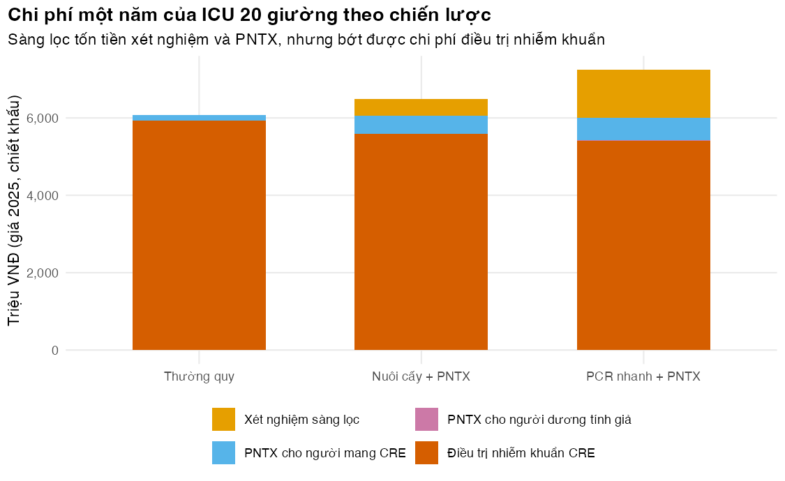
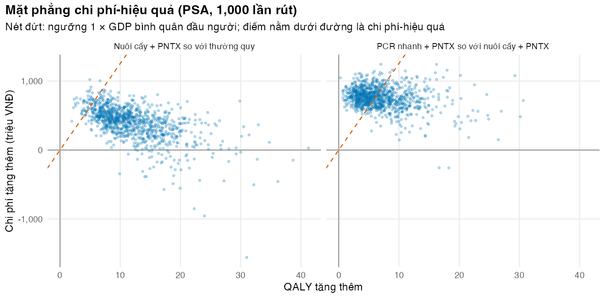
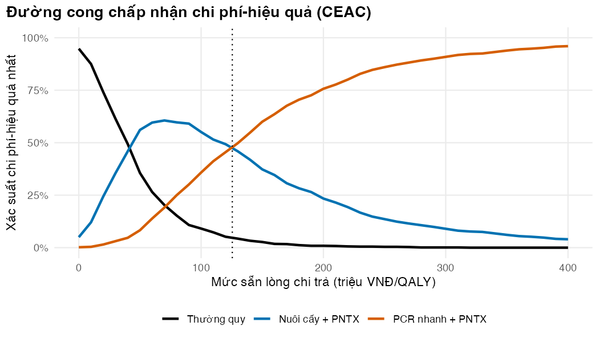

if (!isTRUE(l10n_info()[["UTF-8"]])) invisible(Sys.setlocale("LC_CTYPE", "en_US.UTF-8"))
source("../_shared/R/helpers.R")
source("../_shared/R/vn_data.R") # course-wide values: vn_context(), vn_prices(), vn_mx(), inflate_vnd()
source("code/model.R")
library(ggplot2)
p <- read_all_params()
ptab <- attr(p, "table")
N_PSA <- 1000 # PSA draws (course default)
SP_ALT <- 0.95 # the alternative (lower) specificity of the scenario analysis
SP_LOW <- 0.5 # lowest specificity searched for the break-evenBài 5: Đánh giá kinh tế các can thiệp chống kháng kháng sinh
So sánh sàng lọc bằng nuôi cấy và bằng PCR nhanh kèm phòng ngừa tiếp xúc trong ICU, định giá kháng thuốc tương lai, và trình bày bất định
Vì sao bạn nên quan tâm?
Ban giám đốc một bệnh viện hạng đặc biệt cân nhắc sàng lọc CRE cho mọi người bệnh vào ICU 20 giường, khi nhập khoa và mỗi tuần. Theo giá dịch vụ BHYT, một xét nghiệm PCR phát hiện gen kháng carbapenem là 771,700 VNĐ, gấp 3.0 lần một lần cấy phết trực tràng (Bộ Y tế 2024). Trong mô hình của bài, riêng tiền xét nghiệm PCR một năm là khoảng 1.2 tỷ VNĐ, bằng 10 lần GDP bình quân đầu người. Khoản đó có mua được đủ sức khỏe không, khi mỗi QALY “đáng” khoảng 125.5 triệu VNĐ (1 × GDP bình quân đầu người)? Bài này giúp bạn so sánh thường quy, nuôi cấy và PCR nhanh một cách minh bạch, và nói rõ kết luận đứng vững đến đâu.
Mục tiêu học tập
Sau bài này, bạn có thể:
- Liệt kê các chi phí và kết cục của một can thiệp chống kháng kháng sinh (AMR), và chọn kịch bản phản thực phù hợp.
- Ghép mô hình lây truyền của Bài 3 với chi phí và năm sống điều chỉnh theo chất lượng (QALY) để so sánh ba chiến lược (đường biên hiệu quả, ICER, NMB), và nêu rõ giả định về thường quy và độ đặc hiệu.
- Định giá phần “kháng thuốc tương lai” theo ba kênh: ngoại ứng, lan tỏa, và kháng thuốc gia tăng.
- Thực hiện phân tích độ nhạy xác suất (PSA), vẽ mặt phẳng chi phí-hiệu quả và đường cong chấp nhận chi phí-hiệu quả (CEAC), và nêu rõ tham số nào vẫn cố định.
Ý chính
- Can thiệp chống AMR có chi phí trước mắt và chắc chắn, còn lợi ích đến sau, qua lây truyền, và bất định. Chuỗi lợi ích: ca định cư tránh được → ca nhiễm khuẩn tránh được → tử vong, ngày giường, kháng sinh dự trữ tránh được → QALY và chi phí.
- Chọn kịch bản phản thực như ở Bài 1: ngăn định cư thì so với không nhiễm khuẩn; xét nghiệm nhanh định hướng điều trị thì so với nhiễm khuẩn nhạy.
- Sàng lọc kèm phòng ngừa tiếp xúc (contact precautions, PNTX) bảo vệ cả người không được phát hiện nhờ giảm lây truyền, nên cần mô hình động (Pitman và c.s. 2012). Xét nghiệm nhanh và nhạy hơn không tự động đáng tiền.
- Hai giả định hay bị bỏ quên cần chạy như phân tích kịch bản: thường quy có phát hiện lâm sàng hay không, và độ đặc hiệu của xét nghiệm (dương tính giả đưa người không mang Enterobacterales kháng carbapenem, CRE, vào PNTX). Trong ICU của bài, coi thường quy “không phát hiện ai” đủ để đổi chiến lược được chọn.
- Giá trị của việc giảm kháng thuốc tương lai đến qua ba kênh (ngoại ứng, lan tỏa, kháng thuốc gia tăng). Mô hình một ICU bỏ sót cả ba; hãy nêu rõ.
- Báo cáo theo CHEERS 2022 (Husereau và c.s. 2022). Thời gian triển khai chương trình không phải khung thời gian phân tích: ở đây QALY được tính đến hết đời người bệnh.
Nội dung
Chi phí và kết cục nào cần tính?
Ước tính chi phí của AMR dao động rất rộng, phần lớn vì khác nhau về kết cục, quan điểm và phương pháp, nhất là cách xử lý thời điểm nhiễm khuẩn (Naylor và c.s. 2018; Wozniak và c.s. 2019); xem thêm (Gandra, Barter, và Laxminarayan 2014). Theo quan điểm hệ thống y tế (health-system perspective), có bốn nhóm thành phần: chi phí can thiệp (xét nghiệm, PNTX); chi phí tránh được (ngày giường là chi phí cơ hội, xem Bài 1; kháng sinh dự trữ); kết cục sức khỏe (nhiễm khuẩn, tử vong, QALY); và kháng thuốc tương lai (phần sau). Với sàng lọc và PNTX, can thiệp thay đổi việc ca nhiễm khuẩn có xảy ra hay không, nên dùng số đo “CRE so với bỏ nhiễm khuẩn” (Bài 2). Một xét nghiệm nhanh giúp chọn đúng kháng sinh cho người đã nhiễm, như cây quyết định ở M01, cần “CRE so với nhiễm khuẩn nhạy”.
Ba chiến lược cho một ICU
Ta so sánh ba chiến lược trong ICU 20 giường của Bài 3. Chương trình chạy 365 ngày; người bệnh được theo dõi tiếp đến hết đời để tính QALY.
Chi phí lấy theo giá năm 2025: giá dịch vụ BHYT cho xét nghiệm và ngày giường (Bộ Y tế 2024), giá trúng thầu cho kháng sinh (Bệnh viện Trung ương Thái Nguyên 2023; Bệnh viện Đa khoa khu vực Củ Chi 2024). Một ngày phòng ngừa tiếp xúc (PNTX) gồm vật tư (áo choàng, găng; 150,000 VNĐ, giá trị minh họa) và 31 phút nhân viên mặc và cởi phương tiện phòng hộ (van Dijk và c.s. 2021), định giá theo thu nhập bình quân của người lao động (Cục Thống kê (Bộ Tài chính) 2026): tổng cộng 174,659 VNĐ.
- Thường quy: không sàng lọc chủ động. Người mang CRE chỉ được phát hiện khi có nhiễm khuẩn lâm sàng (80% số ca được nhận diện), khi đó được đặt PNTX ngay. Giả định này áp dụng cho cả ba chiến lược.
- Nuôi cấy + PNTX: sàng lọc phết trực tràng khi nhập viện và mỗi 7 ngày, 261,000 VNĐ mỗi lần; độ nhạy 80%, độ đặc hiệu 98% (minh họa), kết quả sau 3 ngày.
- PCR nhanh + PNTX: cùng lịch, 771,700 VNĐ mỗi lần; độ nhạy 91% và độ đặc hiệu 99% theo tổng hợp các nghiên cứu Xpert Carba-R ở châu Á (Bai, Liu, và Wang 2024), kết quả sau 1 ngày. PCR chỉ tìm gen carbapenemase nên bỏ sót CRE kháng theo cơ chế khác (như mất porin), nên độ nhạy với mọi CRE có thể thấp hơn.
So với Bài 3, mô hình có thêm hai nhóm ngăn. \(C_p\): người mang khuẩn có xét nghiệm dương tính nhưng chưa có kết quả; họ vẫn lây như người chưa phát hiện. \(U_p\) và \(U_d\): người không mang CRE nhưng xét nghiệm dương tính giả (xác suất bằng 1 trừ độ đặc hiệu). Họ không lây, nhưng bị đặt PNTX sau khi có kết quả và tốn ngày PNTX. Nếu về sau họ bị lây, ta coi họ như người mang khuẩn chưa phát hiện, một giả định thận trọng vì không tính tác dụng bảo vệ của PNTX đã có sẵn. Mọi chiến lược bắt đầu từ trạng thái lưu hành của thường quy. Mô hình ODE cho giá trị kỳ vọng xấp xỉ; ở khoa nhỏ, trung bình ngẫu nhiên khác giá trị tất định (Bài 3), một giới hạn cần nêu khi báo cáo.
Chuỗi từ mô hình lây truyền đến kết cục kinh tế như sau. Gọi \(A\) là số ca định cư mắc phải trong khoa (đã chiết khấu), \(\pi\) là xác suất người mang CRE bị nhiễm khuẩn, \(\Delta_D\) và \(\Delta_L\) là xác suất tử vong và số ngày nằm viện tăng thêm mỗi ca nhiễm khuẩn so với bỏ nhiễm khuẩn (Bài 2), và \(P_R\) là xác suất tử vong sau nhiễm CRE:
\[ \begin{aligned} I &= \pi A, \qquad D = I\,\Delta_D, \\ C &= n_{\text{xét nghiệm}} c_{\text{xét nghiệm}} + n_{\text{ngày PNTX}} c_{\text{PNTX}} + I\,(\Delta_L c_{\text{giường}} + d\,c_{\text{kháng sinh}}), \\ \text{QALY mất} &= D \cdot Q_{\text{tử vong}} + I\,(1 - P_R)\,q_{\text{nhiễm khuẩn}}. \end{aligned} \]
\(n_{\text{ngày PNTX}}\) gồm cả ngày của người dương tính giả. \(Q_{\text{tử vong}}\) là số QALY đã chiết khấu mất đi khi một người bệnh tử vong; tổn thất do bệnh tật chỉ tính cho người sống sót. Xác suất \(\pi\) lấy từ Tischendorf và cộng sự (Tischendorf, de Avila, và Safdar 2016). \(Q_{\text{tử vong}}\) dùng bảng sống WHO của Việt Nam ở tuổi trung vị của người bệnh ICU, với tỷ suất tử vong nền nhân 2.0 lần và thỏa dụng 0.75 (hai giá trị minh họa). Người mang khuẩn từ ngoài vào giống nhau ở mọi chiến lược nên không cần tính.
Định giá kháng thuốc tương lai
Mô hình một ICU bỏ sót ba kênh giá trị. Ta tính chúng như phân tích kịch bản, không đưa vào kết quả cơ sở.
- Ngoại ứng của kháng sinh. Mỗi ca nhiễm khuẩn CRE tránh được là một đợt kháng sinh dự trữ không phải dùng, với chi phí ngoại ứng \(c_{AMR}\) mỗi SU (Bài 1) (Shrestha và c.s. 2018; Coast, Smith, và Millar 1996). Hai lưu ý. Ước tính của Shrestha và cộng sự gắn chi phí AMR với lượng kháng sinh tiêu thụ nên gần với chi phí trung bình hơn chi phí biên của một SU thêm vào. Và nếu mô hình đã đếm tác hại của ca nhiễm (QALY, chi phí điều trị) thì cộng thêm \(c_{AMR}\) cho cùng lượng thuốc có nguy cơ đếm trùng.
- Lan tỏa. Người mang CRE ra viện mang CRE sang nơi khác. Ta dùng một tham số minh họa, số ca định cư mới ở nơi khác trên mỗi người ra viện, và định giá như một ca định cư mắc phải trong ICU. Mô hình mạng lưới bệnh viện sẽ thay tham số này.
- Kháng thuốc gia tăng. Nếu tỷ lệ mang CRE khi nhập viện tăng dần, thời gian triển khai dài hơn đổi kết quả vì chính mô hình thay đổi, không chỉ vì quy mô nhân lên. Ta thêm một xu hướng minh họa: tỷ lệ này tăng 3 điểm phần trăm mỗi năm.
Hướng dẫn thực hành tốt về mô hình động khuyến cáo dùng mô hình lây truyền khi can thiệp tác động đến lây truyền, và báo cáo rõ cấu trúc và giả định (Pitman và c.s. 2012).
Thực hành
Giá xét nghiệm, ngày giường và kháng sinh, ngưỡng, quy mô và thời gian nằm ICU, tỷ lệ mang CRE khi nhập ICU, xác suất nhiễm khuẩn, xác suất tử vong và độ chính xác của PCR có nguồn. Tác dụng của PNTX, phát hiện lâm sàng, hệ số lây truyền, độ chính xác của nuôi cấy, vật tư PNTX và xu hướng kháng thuốc là giá trị minh họa. Kết quả gần với thực tế Việt Nam hơn một ví dụ thuần minh họa, nhưng vẫn không phải khuyến cáo cho bệnh viện nào.
Nạp hàm và tham số; đặt số lần rút PSA theo mặc định của khóa học.
Bảng đầu cho tham số của từng chiến lược (clin là tốc độ phát hiện lâm sàng mỗi ngày). Dòng sau tính ba đại lượng nối mô hình lây truyền với kinh tế.
strat_tab <- do.call(rbind, lapply(STRATEGIES, function(s) unlist(ward_parms(p, s))))
rownames(strat_tab) <- STRATEGIES
round(strat_tab[, c("se", "sp", "sigma", "delay", "eps", "clin")], 3) se sp sigma delay eps clin
usual 0.00 1.00 0.000 0 0.5 0.025
culture 0.80 0.98 0.143 3 0.5 0.025
pcr 0.91 0.99 0.143 1 0.5 0.025av <- acquisition_value(p, ms_hazards_true(p)) # cost and QALY loss of one ward-acquired colonisation
qaly_death <- qaly_per_death(p)
cost_per_infection <- av[["cost_per_infection"]]
round(c(qaly_per_death = qaly_death, p_death_per_infection = av[["p_death_excess"]],
cost_per_infection_million = cost_per_infection / 1e6,
qaly_loss_per_infection = av[["qaly_loss_per_infection"]]), 3) qaly_per_death p_death_per_infection
8.284 0.243
cost_per_infection_million qaly_loss_per_infection
60.425 2.023 # Unit costs of the strategies (VND, 2025): BHYT test prices and one day of contact precautions
cp_day <- cp_day_cost(p)
round(c(test_culture = p$c_test_culture, test_pcr = p$c_test_pcr, cp_day = cp_day,
cp_ppe = p$c_cp_ppe_day, cp_staff = p$cp_staff_min_day * p$wage_min))test_culture test_pcr cp_day cp_ppe cp_staff
261000 771700 174659 150000 24659 Mỗi ca tử vong làm mất 8.28 QALY (đã chiết khấu), và mỗi ca nhiễm khuẩn CRE tốn thêm 60.4 triệu VNĐ (giá 2025; ngày giường tính theo hỗn hợp ICU và khoa thường). Một ngày PNTX tốn 174,659 VNĐ, trong đó 24,659 VNĐ là thời gian nhân viên.
Trước khi tin kết quả, ta kiểm tra mô hình bằng ba phép thử có thể thất bại: thường quy ổn định ở nghiệm giải tích (đã gồm phát hiện lâm sàng); số giường được bảo toàn khi có dương tính giả và thời gian chờ; và khi thời gian chờ tiến về 0, mô hình có ngăn chờ cho kết quả như mô hình không có ngăn đó.
# Three checks of the ward model that can fail (they do not hold by construction):
# (1) usual care settles at the analytic equilibrium that includes clinical detection;
# (2) the beds stay full when screening has false positives and a result delay;
# (3) as the result delay shrinks to zero, the pending compartments must give the same answer
# as the model without them.
pp_u <- ward_parms(p, "usual")
o_u <- run_ward_det(pp_u, 3000, ward_init(pp_u, prev = 0))
prev_end <- (o_u$Cu + o_u$Cp + o_u$Cd)[nrow(o_u)] / pp_u$N
y_start <- ward_init(pp_u)
max_gap_beds <- 0
for (s in c("culture", "pcr")) {
o_s <- run_ward_det(ward_parms(p, s), p$horizon_days, y_start)
max_gap_beds <- max(max_gap_beds, abs(ward_total(o_s) - pp_u$N))
}
pp_a <- ward_parms(p, "culture")
pp_b <- pp_a
pp_a$delay <- 0
pp_b$delay <- 1e-4
acq_a <- tail(run_ward_det(pp_a, p$horizon_days, y_start)$Acq, 1)
acq_b <- tail(run_ward_det(pp_b, p$horizon_days, y_start)$Acq, 1)
round(c(prev_ode = prev_end, prev_analytic = ward_equilibrium(pp_u),
max_bed_gap = max_gap_beds, acq_delay0 = acq_a, acq_delay_tiny = acq_b), 4) prev_ode prev_analytic max_bed_gap acq_delay0 acq_delay_tiny
0.8369 0.8369 0.0000 544.6884 544.6898 stopifnot(abs(prev_end - ward_equilibrium(pp_u)) < 1e-4, max_gap_beds < 1e-8,
abs(acq_a / acq_b - 1) < 1e-3)Mô hình số cho 83.7% số giường có người mang CRE, nghiệm giải tích cho 83.7%.
Chạy ba chiến lược. Số ca, số xét nghiệm và số ngày PNTX là số đếm thô; chi phí và QALY đã chiết khấu. Kiểm tra: chi phí không âm, sàng lọc làm giảm số ca mắc mới, và PNTX ở thường quy chỉ đến từ phát hiện lâm sàng (có ngày PNTX, nhưng ít hơn khi sàng lọc).
tab <- run_cea_ward(p)
show_cols <- c("acq", "infections", "deaths", "tests", "cp_days", "n_fp", "col_discharges")
round(tab[, show_cols], 1) # natural units, not discounted acq infections deaths tests cp_days n_fp col_discharges
usual 603.3 99.5 24.2 0.0 834.0 0.0 954.6
culture 569.5 94.0 22.8 1649.8 2685.2 19.7 921.4
pcr 551.3 91.0 22.1 1626.7 3411.3 10.0 903.5round(tab[, c("cost_screen", "cost_cp", "cost_fp", "cost_inf", "cost")] / 1e6, 1) # million VND, discounted cost_screen cost_cp cost_fp cost_inf cost
usual 0.0 143.5 0.0 5927.3 6070.8
culture 424.3 462.1 2.2 5595.0 6481.3
pcr 1237.0 587.0 2.2 5416.0 7240.1round(tab$qaly, 2) # QALY, discounted[1] -198.48 -187.35 -181.36# Checks: costs are non-negative; screening reduces acquisitions; usual care puts carriers on
# precautions only through clinical detection (some days, but fewer than with screening);
# a false positive stays on precautions for less than a mean ICU stay
stopifnot(all(tab[, c("cost_screen", "cost_cp", "cost_fp", "cost_inf")] >= 0),
all(tab[c("culture", "pcr"), "acq"] < tab["usual", "acq"]),
tab["usual", "cp_days"] > 0, tab["usual", "cp_days"] < tab["culture", "cp_days"],
all(tab[c("culture", "pcr"), "fp_cp_days"] / tab[c("culture", "pcr"), "n_fp"] < p$los_icu))
d_screen_pcr <- tab["pcr", "cost_screen"] - tab["usual", "cost_screen"] # extra test spending of PCR vs usual
d_inf_pcr <- tab["usual", "cost_inf"] - tab["pcr", "cost_inf"] # infection cost saved by PCR vs usualSo với thường quy, nuôi cấy + PNTX tránh được 34 ca định cư mắc phải và 5.6 ca nhiễm khuẩn CRE trong một năm. PCR nhanh tránh thêm 3.0 ca nhiễm khuẩn so với nuôi cấy. Đổi lại, nuôi cấy tạo ra 20 lượt dương tính giả mỗi năm và PCR tạo ra 10.
Tiếp theo là phân tích gia tăng trên đường biên hiệu quả (M01). Đoạn mã còn thử hàm đường biên trên một ví dụ nhỏ có đáp án biết trước, và đòi hỏi đường biên chọn cùng chiến lược với NMB cao nhất.
fr <- cea_frontier(cost = stats::setNames(tab$cost, STRATEGIES),
effect = stats::setNames(tab$qaly, STRATEGIES))
fr_show <- fr
fr_show$cost_million <- round(fr$cost / 1e6, 1)
fr_show$effect <- round(fr$effect, 2)
fr_show$icer_million <- round(fr$icer / 1e6, 1)
fr_show[, c("strategy", "cost_million", "effect", "status", "icer_million")] strategy cost_million effect status icer_million
1 usual 6070.8 -198.48 frontier NA
2 culture 6481.3 -187.35 frontier 36.9
3 pcr 7240.1 -181.36 frontier 126.6best_nmb <- rownames(tab)[which.max(tab$nmb)]
best_nmb[1] "culture"icer_pcr <- fr$icer[fr$strategy == "pcr"]
icer_culture <- fr$icer[fr$strategy == "culture"]
# The lesson text reads the ICERs as culture vs usual and PCR vs culture: all three must be on the frontier
stopifnot(all(fr$status == "frontier"), fr$strategy[order(fr$cost)][1] == "usual")
d_cost_culture <- tab["culture", "cost"] - tab["usual", "cost"]
d_qaly_culture <- tab["culture", "qaly"] - tab["usual", "qaly"]
usual_status <- fr$status[fr$strategy == "usual"]
# The frontier and the highest NMB must pick the same strategy at the threshold
stopifnot(frontier_choice(fr, p$wtp) == best_nmb)
# Test the frontier code on a toy case with a known answer: A is extendedly dominated (ICER O->A is
# 200, above O->B = 75), E is strongly dominated by D, and the frontier is O, B, D with ICER(D) = 250
toy <- cea_frontier(cost = c(O = 0, A = 100, B = 150, D = 400, E = 500),
effect = c(O = 0, A = 0.5, B = 2, D = 3, E = 1))
stopifnot(toy$status[toy$strategy == "A"] == "ext. dominated",
toy$status[toy$strategy == "E"] == "dominated",
all(toy$status[toy$strategy %in% c("O", "B", "D")] == "frontier"),
abs(toy$icer[toy$strategy == "B"] - 75) < 1e-9, abs(toy$icer[toy$strategy == "D"] - 250) < 1e-9)Nuôi cấy + PNTX đắt hơn thường quy 410.5 triệu VNĐ và thêm 11.1 QALY mỗi năm triển khai, tức ICER 36.9 triệu VNĐ/QALY, thấp hơn ngưỡng 125.5 triệu VNĐ/QALY (1 × GDP bình quân đầu người). PCR nhanh + PNTX có ICER 126.6 triệu VNĐ/QALY so với nuôi cấy, cao hơn ngưỡng khoảng 0.9%. Chiến lược có NMB cao nhất là “Nuôi cấy + PNTX”, nhưng ICER của PCR sát ngưỡng đến mức một thay đổi nhỏ về giá hay độ nhạy có thể đổi lựa chọn (Bài tập 2 và phần PSA).
Hình sau tách chi phí một năm của từng chiến lược thành bốn thành phần. Kiểm tra: so phần xét nghiệm với phần điều trị nhiễm khuẩn giữa các chiến lược.
cost_df <- data.frame(
strategy = factor(rep(STRATEGY_LABELS[STRATEGIES], 4), levels = STRATEGY_LABELS),
component = factor(rep(c("Xét nghiệm sàng lọc", "PNTX cho người mang CRE", "PNTX cho người dương tính giả",
"Điều trị nhiễm khuẩn CRE"), each = 3),
levels = c("Xét nghiệm sàng lọc", "PNTX cho người mang CRE", "PNTX cho người dương tính giả",
"Điều trị nhiễm khuẩn CRE")),
value = c(tab$cost_screen, tab$cost_cp - tab$cost_fp, tab$cost_fp, tab$cost_inf) / 1e6
)
fig_costs <- ggplot(cost_df, aes(strategy, value, fill = component)) +
geom_col(width = 0.6) +
scale_fill_manual(values = pal_course[c(4, 5, 6, 2)], name = NULL) +
scale_y_continuous(labels = function(x) fmt_num(x)) +
labs(x = NULL, y = "Triệu VNĐ (giá 2025, chiết khấu)",
title = sprintf("Chi phí một năm của ICU %s giường theo chiến lược", fmt_num(p$n_beds)),
subtitle = "Sàng lọc tốn tiền xét nghiệm và PNTX, nhưng bớt được chi phí điều trị nhiễm khuẩn") +
guides(fill = guide_legend(nrow = 2)) +
theme_course()
save_fig(fig_costs, "l05-costs.png", width = 7.5, height = 4.6)
Với PCR, tiền xét nghiệm tăng 1,237 triệu VNĐ so với thường quy, trong khi chi phí điều trị nhiễm khuẩn giảm 511 triệu VNĐ: phần tiền xét nghiệm tăng lớn hơn phần điều trị giảm được.
Hai giả định có thể đổi chiều kết luận. Đoạn mã sau chạy lại so sánh nuôi cấy với thường quy khi độ đặc hiệu là 100%, 95%, và khi thường quy không phát hiện lâm sàng ai (cách làm đơn giản hóa hay gặp), rồi tìm độ đặc hiệu thấp nhất mà nuôi cấy vẫn có NMB ít nhất bằng thường quy (tìm bằng uniroot() từ 50% đến 100%).
# How much do two assumptions about the comparison matter?
# - specificity of the screening tests (false positives are put on precautions)
# - clinical detection in usual care (carriers with an infection are recognised and isolated)
scen_row <- function(p_x, clinical = TRUE) {
tb <- run_cea_ward(p_x, clinical = clinical)
fr_x <- cea_frontier(stats::setNames(tb$cost, STRATEGIES), stats::setNames(tb$qaly, STRATEGIES))
dc <- tb["culture", "cost"] - tb["usual", "cost"]
dq <- tb["culture", "qaly"] - tb["usual", "qaly"]
data.frame(d_cost_million = dc / 1e6, d_qaly = dq,
icer_million = if (dc > 0) dc / dq / 1e6 else NA_real_,
usual_status = fr_x$status[fr_x$strategy == "usual"],
fp_cost_million = tb["culture", "cost_fp"] / 1e6,
best = rownames(tb)[which.max(tb$nmb)])
}
p_sp1 <- p
p_sp1$sp_culture <- 1
p_sp1$sp_pcr <- 1
p_sp95 <- p
p_sp95$sp_culture <- SP_ALT
p_sp95$sp_pcr <- SP_ALT
scen <- rbind(base = scen_row(p),
perfect_specificity = scen_row(p_sp1),
specificity_95 = scen_row(p_sp95),
no_clinical_detection = scen_row(p, clinical = FALSE))
scen_show <- scen
scen_show[, c("d_cost_million", "d_qaly", "icer_million", "fp_cost_million")] <-
round(scen[, c("d_cost_million", "d_qaly", "icer_million", "fp_cost_million")], 2)
scen_show d_cost_million d_qaly icer_million usual_status
base 410.53 11.13 36.89 frontier
perfect_specificity 409.58 11.13 36.81 frontier
specificity_95 411.93 11.13 37.02 frontier
no_clinical_detection 458.49 12.86 35.66 frontier
fp_cost_million best
base 2.23 culture
perfect_specificity 0.00 culture
specificity_95 5.53 culture
no_clinical_detection 2.11 pcr# Lowest specificity of culture at which it still has at least the net monetary benefit of usual
# care at the threshold (searched between SP_LOW and 1; NA if there is no switch in that range)
nmb_gap_sp <- function(sp) {
p_x <- p
p_x$sp_culture <- sp
tb <- run_cea_ward(p_x)
tb["culture", "nmb"] - tb["usual", "nmb"]
}
gap_sp1 <- nmb_gap_sp(1)
gap_splow <- nmb_gap_sp(SP_LOW)
stopifnot(gap_sp1 >= nmb_gap_sp(p$sp_culture), nmb_gap_sp(p$sp_culture) >= gap_splow) # more false positives never help
sp_breakeven <- if (gap_sp1 > 0 && gap_splow < 0) uniroot(nmb_gap_sp, c(SP_LOW, 1))$root else NA_real_
noncarrier_share <- 1 - prev_end # share of ICU beds without CRE in usual care (who can be false positive)
round(c(nmb_gap_sp1_million = gap_sp1 / 1e6, nmb_gap_splow_million = gap_splow / 1e6,
sp_breakeven = sp_breakeven), 3) nmb_gap_sp1_million nmb_gap_splow_million sp_breakeven
986.923 965.795 NA Với độ đặc hiệu 98%, các lượt dương tính giả của nuôi cấy tốn 2.2 triệu VNĐ ngày PNTX mỗi năm; ở độ đặc hiệu 95% là 5.5 triệu VNĐ. Ngay cả khi độ đặc hiệu chỉ 50%, nuôi cấy vẫn có NMB cao hơn thường quy: trong ICU này chỉ 16% số giường là người không mang CRE, nên rất ít người có thể bị dương tính giả. Ở một khoa ít CRE, độ đặc hiệu sẽ quan trọng hơn nhiều. Nếu coi thường quy không phát hiện lâm sàng ai, nuôi cấy thêm 12.9 QALY thay vì 11.1, tức lợi ích của sàng lọc bị thổi phồng 16%, và chiến lược có NMB cao nhất thành “PCR nhanh + PNTX” thay vì “Nuôi cấy + PNTX”: giả định về thường quy đủ để đổi lựa chọn.
Bây giờ định giá kháng thuốc tương lai theo ba kênh đã nêu: (a) cộng chi phí ngoại ứng của kháng sinh dự trữ vào chi phí; (b) định giá người mang CRE ra viện; (c) chạy lại với thời gian triển khai 5 năm, có và không có xu hướng kháng thuốc gia tăng.
# (a) Resistance externality of the reserve antibiotics used for CRE infections (average cost per SU)
ext_cost <- tab$abx_su * amr_cost_su(p)
nmb_ext <- tab$qaly * p$wtp - (tab$cost + ext_cost)
round(data.frame(row.names = STRATEGIES, abx_su = tab$abx_su,
ext_cost_million = ext_cost / 1e6,
nmb_million = tab$nmb / 1e6, nmb_with_ext_million = nmb_ext / 1e6), 1) abx_su ext_cost_million nmb_million nmb_with_ext_million
usual 4119.9 41.1 -30980.0 -31021.2
culture 3888.9 38.8 -29994.0 -30032.9
pcr 3764.6 37.6 -30000.8 -30038.4rank_same <- identical(order(-tab$nmb), order(-nmb_ext)) # does the ranking change?
rank_same[1] TRUE# (b) Carriers discharged to other wards or hospitals: value the further colonisations they start
sp_val <- spillover_value(p, tab)
colonised_out_averted <- tab["usual", "col_discharges"] - tab[c("culture", "pcr"), "col_discharges"] # raw counts
extra_acq_averted <- sp_val$extra_acq[1] - sp_val$extra_acq[2:3] # discounted
cost_sp <- stats::setNames(tab$cost + sp_val$cost, STRATEGIES)
qaly_sp <- stats::setNames(tab$qaly + sp_val$qaly, STRATEGIES)
fr_sp <- cea_frontier(cost_sp, qaly_sp)
icer_pcr_sp <- fr_sp$icer[fr_sp$strategy == "pcr"]
round(c(colonised_out_averted = colonised_out_averted, extra_acq_averted = extra_acq_averted,
icer_pcr_with_spillover_million = icer_pcr_sp / 1e6), 1) colonised_out_averted1 colonised_out_averted2
33.2 51.1
extra_acq_averted1 extra_acq_averted2
1.6 2.5
icer_pcr_with_spillover_million
119.3 # (c) Longer run: with a constant admission prevalence the model is stationary, so a longer
# horizon only scales cost and QALY; resistance that grows (a rising admission prevalence) changes
# the dynamics. Compare one year, five years stationary, and five years with a rising trend.
days_long <- p$horizon_years_long * 365
tab5 <- run_cea_ward(p, days = days_long)
tab5_trend <- run_cea_ward(p, days = days_long, phi_trend = p$phi_trend_year)
frontier_info <- function(tb) {
f <- cea_frontier(stats::setNames(tb$cost, STRATEGIES), stats::setNames(tb$qaly, STRATEGIES))
data.frame(usual_status = f$status[f$strategy == "usual"],
icer_culture_million = f$icer[f$strategy == "culture"] / 1e6,
icer_pcr_million = f$icer[f$strategy == "pcr"] / 1e6)
}
runs <- list(tab, tab5, tab5_trend)
horizon_tab <- cbind(
scenario = c("1 year, stationary", "5 years, stationary", "5 years, rising prevalence"),
acq_usual = sapply(runs, function(tb) tb["usual", "acq"]),
d_cost_culture_million = sapply(runs, function(tb) (tb["culture", "cost"] - tb["usual", "cost"]) / 1e6),
do.call(rbind, lapply(runs, frontier_info))
)
horizon_show <- horizon_tab
horizon_show[, c("acq_usual", "d_cost_culture_million", "icer_culture_million", "icer_pcr_million")] <-
round(horizon_tab[, c("acq_usual", "d_cost_culture_million", "icer_culture_million", "icer_pcr_million")], 1)
horizon_show scenario acq_usual d_cost_culture_million usual_status
1 1 year, stationary 603.3 410.5 frontier
2 5 years, stationary 3016.7 1945.9 frontier
3 5 years, rising prevalence 2704.6 2158.7 frontier
icer_culture_million icer_pcr_million
1 36.9 126.6
2 37.0 127.1
3 44.3 135.5icer_pcr_5y <- horizon_tab$icer_pcr_million[2] * 1e6
icer_pcr_trend <- horizon_tab$icer_pcr_million[3] * 1e6
icer_change_5y <- icer_pcr_5y / icer_pcr - 1
icer_change_trend <- icer_pcr_trend / icer_pcr - 1
status_trend <- horizon_tab$usual_status[3]
icer_culture_trend <- horizon_tab$icer_culture_million[3] * 1e6
phi_year5 <- p$phi_adm + p$phi_trend_year * p$horizon_years_long
# A stationary model must not change the ICER much; if it did, something other than scale is moving
stopifnot(abs(icer_change_5y) < 0.05)Về kênh (a), với \(c_{AMR}\) ≈ US$0.4 mỗi SU, phần ngoại ứng không làm thay đổi thứ hạng các chiến lược. Kênh (b): nuôi cấy giảm 33 và PCR giảm 51 người mang CRE ra viện mỗi năm (số đếm thô); với 0.05 ca định cư mới trên mỗi người ra viện (giá trị minh họa), ICER của PCR so với nuôi cấy là 119.3 thay vì 126.6 triệu VNĐ/QALY, đủ để đưa PCR sang phía bên kia ngưỡng. Kênh (c): khi tỷ lệ mang CRE khi nhập viện không đổi, 5 năm chỉ nhân quy mô lên (ICER của PCR 127.1 triệu VNĐ/QALY, chênh 0.3%). Khi tỷ lệ này tăng từ 31% lên 46%, ICER của PCR là 135.5 triệu VNĐ/QALY (chênh 7.0%) và ICER của nuôi cấy so với thường quy là 44.3 triệu VNĐ/QALY. Sàng lọc kém hiệu quả hơn khi kháng thuốc gia tăng, vì khi nhiều người mang khuẩn từ ngoài vào hơn thì còn ít người chưa mang khuẩn để bảo vệ. Thời gian dài chỉ có ý nghĩa khi mô hình có động lực thay đổi theo thời gian.
Cuối cùng là PSA với 1,000 bộ tham số. Mỗi tham số có phân phối beta, gamma hay lognormal trong params/ được rút ngẫu nhiên với trung bình bằng giá trị cơ sở, khớp với khoảng thấp-cao (xem M03). PSA này cũng rút các nguy cơ tức thời của Bài 2 (gamma, với số sự kiện kỳ vọng của một đoàn hệ 20,000 lượt nhập viện), số năm sống mất đi và số ngày dùng kháng sinh, là những đầu vào bất định nhất và chi phối QALY. Các nguy cơ này chỉ mang sai số lấy mẫu, chưa mang sai lệch do gây nhiễu, nên khoảng bất định vẫn hẹp hơn thực tế. Kiểm tra: mọi kết quả hữu hạn, số sự kiện khớp đoàn hệ, và trung bình các phân phối khớp giá trị cơ sở.
set.seed(605)
draws <- sample_params(p, N_PSA)
varied <- names(draws)[sapply(draws, function(x) stats::sd(x) > 0)]
varied [1] "share_excess_icu" "dur_abx" "hr_post_icu" "c_amr_su_usd"
[5] "c_cp_ppe_day" "p_inf_col" "qaly_loss_inf" "u_survivor"
[9] "h_dis_0" "h_dth_0" "h_dis_s" "h_dth_s"
[13] "h_dis_r" "h_dth_r" "los_icu" "phi_adm"
[17] "beta_tx" "eps_cp" "p_clin_cp" "se_culture"
[21] "sp_culture" "se_pcr" "sp_pcr" "c_abx_s_day"
[25] "c_abx_r_day" # Parameters the ward CEA reads (the infection hazards h_inf_* do not affect the excess measures)
used_in_ward_cea <- c("n_beds", "los_icu", "phi_adm", "beta_tx", "eps_cp", "p_clin_cp",
"se_culture", "sp_culture", "se_pcr", "sp_pcr", "screen_interval",
"delay_culture", "delay_pcr", "c_test_culture", "c_test_pcr",
"c_cp_ppe_day", "cp_staff_min_day", "wage_min",
"p_inf_col", "c_bedday", "c_bedday_ward", "share_excess_icu",
"c_abx_r_day", "dur_abx", "qaly_loss_inf", "u_survivor", "age_icu", "hr_post_icu",
"disc_rate", "horizon_days", "wtp",
"h_dis_0", "h_dth_0", "h_dis_s", "h_dth_s", "h_dis_r", "h_dth_r")
fixed_used <- setdiff(used_in_ward_cea, varied)
fixed_used [1] "n_beds" "screen_interval" "delay_culture" "delay_pcr"
[5] "c_test_culture" "c_test_pcr" "cp_staff_min_day" "wage_min"
[9] "c_bedday" "c_bedday_ward" "age_icu" "disc_rate"
[13] "horizon_days" "wtp" stopifnot(all(used_in_ward_cea %in% names(p)))
# The event counts behind the hazard distributions (params/los_sim.csv) must match the cohort
# and hazards they were derived from, otherwise the PSA width is not what the text says
H0 <- ms_hazards_true(p)
h_a <- sum(H0["Adm", ])
n_s <- p$n_cohort * H0["Adm", "InfS"] / h_a
n_r <- p$n_cohort * H0["Adm", "InfR"] / h_a
expected_events <- c(h_dis_0 = H0["Adm", "Disch"] * p$n_cohort / h_a,
h_dth_0 = H0["Adm", "Dead"] * p$n_cohort / h_a,
h_dis_s = H0["InfS", "Disch"] * n_s / sum(H0["InfS", ]),
h_dth_s = H0["InfS", "Dead"] * n_s / sum(H0["InfS", ]),
h_dis_r = H0["InfR", "Disch"] * n_r / sum(H0["InfR", ]),
h_dth_r = H0["InfR", "Dead"] * n_r / sum(H0["InfR", ]))
csv_events <- ptab$dist_p1[match(names(expected_events), ptab$name)]
stopifnot(all(abs(csv_events / expected_events - 1) < 0.02))
# Each distribution is built to have mean equal to the base value (value = mean)
chk <- c("beta_tx", "c_amr_su_usd", "hr_post_icu", "h_dth_r", "c_abx_r_day")
tol <- c(beta_tx = 0.03, c_amr_su_usd = 0.07, hr_post_icu = 0.05, h_dth_r = 0.02, c_abx_r_day = 0.03)
round(colMeans(draws[chk]) / unlist(p[chk]), 3) beta_tx c_amr_su_usd hr_post_icu h_dth_r c_abx_r_day
0.995 1.011 0.998 0.998 0.994 stopifnot(all(abs(colMeans(draws[chk]) / unlist(p[chk]) - 1) < tol[chk]))
psa <- run_psa_ward(draws)
stopifnot(all(is.finite(psa$cost)), all(is.finite(psa$qaly)))
d_cost <- psa$cost - psa$cost[, "usual"]
d_qaly <- psa$qaly - psa$qaly[, "usual"]
round(rbind(mean_d_cost_million = colMeans(d_cost) / 1e6, mean_d_qaly = colMeans(d_qaly)), 2) usual culture pcr
mean_d_cost_million 0 396.37 1151.37
mean_d_qaly 0 12.03 19.06# Probability that culture screening is cheaper AND better than usual care
p_culture_dominant <- mean(d_cost[, "culture"] < 0 & d_qaly[, "culture"] > 0)
nmb_psa <- psa$qaly * p$wtp - psa$cost
p_best <- table(factor(STRATEGIES[apply(nmb_psa, 1, which.max)], levels = STRATEGIES)) / N_PSA
round(c(p_culture_dominant = p_culture_dominant, p_best), 3)p_culture_dominant usual culture pcr
0.052 0.045 0.480 0.475 Tham số vẫn cố định trong PSA: n_beds, screen_interval, delay_culture, delay_pcr, c_test_culture, c_test_pcr, cp_staff_min_day, wage_min, c_bedday, c_bedday_ward, age_icu, disc_rate, horizon_days, wtp. Nuôi cấy + PNTX vừa rẻ hơn vừa hiệu quả hơn thường quy trong 5% số lần rút. Ở ngưỡng 1 × GDP bình quân đầu người, xác suất mỗi chiến lược có NMB cao nhất là: thường quy 4%, nuôi cấy 48%, PCR nhanh 48%. Hai chiến lược sàng lọc gần như ngang nhau: lựa chọn giữa nuôi cấy và PCR rất bất định, đúng chỗ phân tích giá trị thông tin (M03) cho biết có nên nghiên cứu thêm trước khi quyết định. PSA chỉ phản ánh bất định của tham số đã có phân phối; bất định về cấu trúc, như hai giả định ở trên, nằm trong phân tích kịch bản.
Hai hình sau vẽ kết quả PSA: mặt phẳng chi phí-hiệu quả của hai so sánh liền kề và CEAC. Kiểm tra: xác suất trong CEAC cộng lại bằng 1 ở mọi mức sẵn lòng chi trả; so đám điểm với đường ngưỡng nét đứt.
plane_df <- data.frame(
comparison = rep(c("Nuôi cấy + PNTX so với thường quy", "PCR nhanh + PNTX so với nuôi cấy + PNTX"),
each = N_PSA),
d_qaly = c(d_qaly[, "culture"], psa$qaly[, "pcr"] - psa$qaly[, "culture"]),
d_cost = c(d_cost[, "culture"], psa$cost[, "pcr"] - psa$cost[, "culture"]) / 1e6
)
fig_plane <- ggplot(plane_df, aes(d_qaly, d_cost)) +
geom_hline(yintercept = 0, colour = "grey60") +
geom_vline(xintercept = 0, colour = "grey60") +
geom_point(alpha = 0.25, size = 0.8, colour = pal_course[1]) +
geom_abline(slope = p$wtp / 1e6, intercept = 0, linetype = "dashed", colour = pal_course[2]) +
facet_wrap(~comparison) +
scale_y_continuous(labels = function(x) fmt_num(x)) +
labs(x = "QALY tăng thêm", y = "Chi phí tăng thêm (triệu VNĐ)",
title = sprintf("Mặt phẳng chi phí-hiệu quả (PSA, %s lần rút)", fmt_num(N_PSA)),
subtitle = "Nét đứt: ngưỡng 1 × GDP bình quân đầu người; điểm nằm dưới đường là chi phí-hiệu quả") +
theme_course()
save_fig(fig_plane, "l05-ce-plane.png", width = 8.5, height = 4.2)
wtp_grid <- seq(0, 400e6, by = 10e6)
ce <- ceac(psa, wtp_grid)
ce$strategy_vi <- factor(STRATEGY_LABELS[ce$strategy], levels = STRATEGY_LABELS)
fig_ceac <- ggplot(ce, aes(wtp / 1e6, prob, colour = strategy_vi)) +
geom_line(linewidth = 1) +
geom_vline(xintercept = p$wtp / 1e6, linetype = "dotted") +
scale_colour_manual(values = pal_course[c(8, 1, 2)], name = NULL) +
scale_y_continuous(labels = function(x) paste0(100 * x, "%"), limits = c(0, 1)) +
labs(x = "Mức sẵn lòng chi trả (triệu VNĐ/QALY)", y = "Xác suất chi phí-hiệu quả nhất",
title = "Đường cong chấp nhận chi phí-hiệu quả (CEAC)") +
theme_course()
save_fig(fig_ceac, "l05-ceac.png", width = 7, height = 4)
stopifnot(all(abs(tapply(ce$prob, ce$wtp, sum) - 1) < 1e-12))

Mẹo thực hành
- Viết chuỗi “định cư → nhiễm khuẩn → tử vong, ngày giường → QALY, chi phí” thành bảng trung gian (như
tab) trước khi tính ICER, để người đọc kiểm tra từng mắt xích. - Bắt đầu mọi chiến lược từ cùng trạng thái hiện tại, không phải từ khoa “sạch” CRE.
- Khi so sánh xét nghiệm, hãy tìm giá hòa vốn (Bài tập 2) và độ đặc hiệu hòa vốn: nhà quản lý thường đàm phán được giá.
- Liệt kê các kênh giá trị mô hình không tính và các tham số vẫn cố định, như CHEERS 2022 yêu cầu.
Lỗi thường gặp
- Dùng mô hình tĩnh với nguy cơ định cư cố định: chỉ thấy người được phát hiện, bỏ qua người được bảo vệ gián tiếp, nên đánh giá thấp lợi ích (so sánh M05 Bài 5).
- Tính chi phí ca nhiễm khuẩn từ so sánh giản đơn về thời gian nằm viện: lợi ích bị thổi phồng (Bài 2).
- Đếm cả người mang khuẩn từ ngoài vào như ca “tránh được”: can thiệp trong khoa không đổi số người mang khuẩn khi nhập viện.
- Chỉ nhìn độ nhạy và thời gian chờ. Bỏ qua độ đặc hiệu thì thiếu chi phí dương tính giả; coi thường quy là “không ai được phát hiện” thì thổi phồng lợi ích của sàng lọc.
Bài tập
Bài 1 (dễ). Nếu ngưỡng chi phí-hiệu quả là 3 × GDP bình quân đầu người, chiến lược nào có NMB cao nhất?
Lời giải
# Exercise 1: which strategy has the highest NMB if the threshold were three times higher?
w3 <- 3 * p$wtp
nmb3 <- tab$qaly * w3 - tab$cost
names(nmb3) <- STRATEGIES
round(nmb3 / 1e6, 1) usual culture pcr
-80798.4 -77019.5 -75522.2 names(which.max(nmb3))[1] "pcr"Ở ngưỡng 376 triệu VNĐ/QALY, chiến lược tốt nhất là “PCR nhanh + PNTX”. Điều này khớp với ICER của PCR (126.6 triệu VNĐ/QALY): PCR chỉ đáng chọn khi ngưỡng vượt ICER của nó.
Bài 2 (vừa). Giá một xét nghiệm PCR phải bằng bao nhiêu để PCR nhanh + PNTX có NMB bằng nuôi cấy + PNTX ở ngưỡng 1 × GDP bình quân đầu người?
Lời giải
Dùng uniroot() trên hiệu NMB giữa hai chiến lược, theo giá xét nghiệm PCR.
# Exercise 2: PCR test price at which PCR + PNTX and culture + PNTX have equal NMB
nmb_gap <- function(price) {
p_x <- p
p_x$c_test_pcr <- price
t_x <- run_cea_ward(p_x)
t_x["pcr", "nmb"] - t_x["culture", "nmb"]
}
price_threshold <- uniroot(nmb_gap, c(0, p$c_test_pcr))$root
round(price_threshold)[1] 767485Giá hòa vốn là 767,485 VNĐ mỗi xét nghiệm, so với giá BHYT 771,700 VNĐ, tức thấp hơn 0.5%. Đây là con số để đưa vào đàm phán giá hoặc để quyết định chỉ dùng PCR cho nhóm nguy cơ cao.
Bài 3 (khó). Dùng mô hình hai chủng của Bài 4 để đánh giá một năm quản lý sử dụng kháng sinh trong ICU ở ba mức giảm carbapenem (cận dưới, cơ sở, cận trên): số ca nhiễm khuẩn CRE và tử vong tránh được, QALY có thêm, chi phí ròng (chi phí chương trình trừ chi phí điều trị và tiền carbapenem tiết kiệm được, đã chiết khấu), và phần ngoại ứng tiết kiệm được. Nêu ít nhất hai giả định làm kết quả trông tốt hơn thực tế, và một nguy cơ đếm trùng.
Lời giải
Hai mô hình có mức mang CRE cơ sở khác nhau (mô hình hai chủng có tự hết mang khuẩn, mô hình ICU không có). Vì vậy ta chỉ lấy mức giảm tương đối số ca định cư CRE từ mô hình hai chủng, rồi áp vào số ca định cư của chính mô hình ICU ở thường quy. Chi phí và QALY đã chiết khấu; số ca là số đếm thô.
# Exercise 3: one year of stewardship in a 20-bed ICU, using the two-strain model of Lesson 4 for
# the RELATIVE fall in CRE acquisitions. Its baseline carriage differs from the ward model's
# (it has spontaneous clearance, the ward model has not), so we apply the relative fall to the
# ward model's own acquisitions under usual care. Everything in cost and QALY is discounted.
tp <- twostrain_parms(p)
eq0 <- twostrain_equilibrium(tp)
disc365 <- discount_weights((seq_len(365) - 0.5) / 365, p$disc_rate)
w_year <- mean(disc365) # average discount weight of a flow spread over the year
stew_year <- function(reduction) {
f_new <- p$f_abx * (1 - reduction)
tp_s <- twostrain_parms(p, f_abx = f_new)
yr0 <- run_twostrain(tp, 365, y0 = eq0)
yr1 <- run_twostrain(tp_s, 365, y0 = eq0)
rel_u <- 1 - yr1$AcqR[366] / yr0$AcqR[366] # raw
rel_d <- 1 - sum(diff(yr1$AcqR) * disc365) / sum(diff(yr0$AcqR) * disc365) # discounted
acq_u <- tab["usual", "acq"] * rel_u
acq_d <- tab["usual", "acq_d"] * rel_d
carb_days_saved <- (p$f_abx - f_new) * p$n_beds * 365
inf_u <- acq_u * p$p_inf_col
c(reduction = reduction, rel_fall_acq = rel_u,
infections_averted = inf_u, deaths_averted = inf_u * av[["p_death_excess"]],
qaly_gain = acq_d * av[["qaly_loss"]],
net_cost_million = (p$c_stew_year * w_year - acq_d * av[["cost"]] -
carb_days_saved * p$c_carb_day * w_year) / 1e6,
ext_saving_million = carb_days_saved * p$su_per_day * amr_cost_su(p) * w_year / 1e6)
}
row_s <- ptab[ptab$name == "stew_reduction", ]
stew_tab <- as.data.frame(t(sapply(c(row_s$low, row_s$value, row_s$high), stew_year)))
round(stew_tab, 2) reduction rel_fall_acq infections_averted deaths_averted qaly_gain
1 0.1 0.03 2.54 0.62 5.06
2 0.3 0.09 8.48 2.06 16.90
3 0.5 0.16 15.79 3.83 31.48
net_cost_million ext_saving_million
1 412.79 5.15
2 4.47 15.45
3 -485.69 25.76stew <- unlist(stew_tab[2, ]) # base case (middle row)
stopifnot(all(diff(stew_tab$infections_averted) > 0), all(diff(stew_tab$qaly_gain) > 0))Ở mức giảm cơ sở (30%), chương trình làm giảm 9% số ca định cư, tránh 8.5 ca nhiễm khuẩn CRE và 2.1 ca tử vong, thêm 16.9 QALY, với chi phí ròng 4 triệu VNĐ (số âm nghĩa là tiết kiệm; chi phí chương trình 600 triệu VNĐ mỗi năm là giá trị minh họa). Kết quả nhạy với mức giảm: ở cận dưới (10%) chương trình tốn thêm 413 triệu VNĐ, ở cận trên (50%) tiết kiệm 486 triệu VNĐ. Hai giả định lạc quan: (1) ngày carbapenem giảm được không bị thay bằng kháng sinh khác có chi phí; (2) tỷ suất loại bỏ chủng nhạy, fitness cost và việc áp mức giảm tương đối từ mô hình này sang mô hình kia đều là giả định minh họa. Nguy cơ đếm trùng: phần ngoại ứng tiết kiệm (15.5 triệu VNĐ) đến từ cùng lượng carbapenem giảm đó, và tác hại của kháng thuốc đã nằm một phần trong số ca CRE tránh được; vì vậy không cộng nó vào chi phí ròng.
Tài liệu tham khảo
Kịch bản video (~15 phút)
| # | Slide | Lời giảng chính | Hình/Code |
|---|---|---|---|
| 1 | Vì sao AMR khó đánh giá | Chi phí trước mắt, lợi ích gián tiếp và bất định | Bảng 4 thành phần |
| 2 | Chọn phản thực | Ngăn định cư: so với không nhiễm; xét nghiệm định hướng điều trị: so với nhiễm khuẩn nhạy | Liên hệ Bài 1, M01 |
| 3 | Ba chiến lược | Thường quy (có phát hiện lâm sàng), nuôi cấy, PCR nhanh; giá BHYT; một ngày PNTX; ngăn chờ kết quả; dương tính giả | l05-strategies |
| 4 | Chuỗi kết cục | Định cư → nhiễm khuẩn → tử vong, ngày giường → QALY, chi phí | Hệ phương trình chi phí |
| 5 | Kết quả cơ sở | Số ca tránh được; chi phí từng thành phần | figs/l05-costs.png |
| 6 | Đường biên hiệu quả | Dominance, ICER của PCR; kiểm tra bằng ví dụ nhỏ | l05-frontier |
| 7 | Hai giả định | Độ đặc hiệu ít quan trọng khi gần như ai cũng mang CRE; thường quy không phát hiện ai thổi phồng lợi ích | l05-assumptions |
| 8 | Kháng thuốc tương lai | Ba kênh: ngoại ứng (trung bình, đếm trùng), lan tỏa, kháng thuốc gia tăng | l05-future |
| 9 | PSA và CEAC | Những gì được rút, những gì vẫn cố định; mặt phẳng chi phí-hiệu quả, CEAC | figs/l05-ce-plane.png, figs/l05-ceac.png |
| 10 | Giá hòa vốn | Con số để đàm phán | Bài tập 2 |
| 11 | Quản lý sử dụng kháng sinh | Ghép mô hình Bài 4 vào chuỗi kinh tế; chiết khấu; giả định lạc quan | Bài tập 3 |
| 12 | Tóm tắt module | Phản thực, thời điểm, lây truyền, chọn lọc, kinh tế | Sơ đồ ở index.qmd |